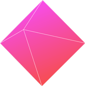
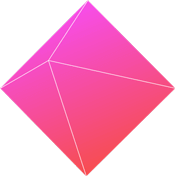

姓名：陈晓珊
性别：女
出生：1994.11
学历：大专
专业：移动互联网应用技术
个人博客：http://yimi-shan.github.io/
移动电话：15113329797
电子邮件：995164849@qq.com


应聘岗位
前端工程师
前端工程师
专业技能


HTML
深刻理解标签语义化，熟练使用html标签，完成前端页面开发，确保对各个浏览器的良好兼容并符合W3C规范，并对SEO搜索引擎进行优化。
CSS
熟练使用CSS及CSS3新属性对页面进行合理排版，以及动画制作。熟练使用Sprite技术，熟练使用CSS预处理语言SASS。熟练使用媒体查询开发响应式网站。
JS
熟练使用原生JS做常见的页面效果，如轮播图、遮罩层，图片预加载等。掌握原生的JS，如函数式编程、DOM操作、BOM、事件流、理解面向对象、闭包、作用域链、原型链等。能灵活运用Ajax技术向服务器请求数据。
工具
熟练使用版本控制工具git。熟练掌握图片处理工具PS、CDR，开发工具Sublime Text、HBulider等开发工具。熟练使用Chrome、Firefox、进行代码调试。灵活运用glup自动化构建工具进行快速开发。
H5
掌握H5新标签如video audio等，了解H5的API websocket canvas localStorange/session Storage离线存储。电池状态navigation.getBattery()地理位置navigation.geolocation(),网络状态offline online。
插件
Tween JS ，Zepto JS ,Swipe JS等。
框架
掌握bootstrap，JQ框架，了解Angular.JS进行模块化开发等。
其它编程语言
熟悉PHP后端语言和MySQL,熟悉前后端交互原理，了解Node.js。
其它知识
对设计有一定的认识，了解c语言、java、Android、cocos-2dx等。

 


在校实践经历
2014-2015 寒假期间，在中山巨邦广告公司任平面设计助理一职。实习成果 在职期间培养了自己的耐心与细心，让我对PS及CDR更加的熟练，也让我对平面设计有了更高的认识。 2013-2015 加入学校的学社联以及学生会，参与组织策划一些晚会及活动，大二任民乐协会副会长
收获 让我更加懂得团队协作的重要性，锻炼了言语的表达能力，以及了解活动的组织与策划的过程。 为梦想而持续奋斗着...
毕业院校
中山火炬职业技术学院，移动互联网应用技术专业
主修课程
HTML5、移动WEB开发、手机游戏开发
C语言、Photoshop
Java程序设计、基于Android的应用开发、App开发项目实战
数据库构建与管理、Cocos-2dx
喜欢编程，设计，登山，旅行。
2013-2014 国家励志奖学金
2013-2014 二等奖学金
2013-2014 素拓标兵二等奖
2014-2015 二等奖学金
2014-2015 素拓标兵二等奖
2015-2016 优秀毕业生
《精通CSS高级Web标准解决方案（第二版）》
《JavaScript高级程序设计（第三版）》
《响应式Web设计：HTML5和CSS3实践》
《MySQL数据库技术与实验指导》